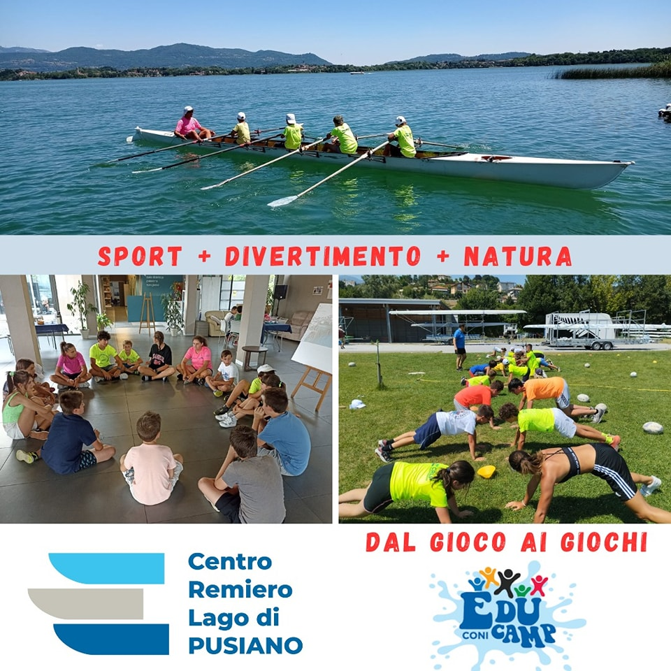
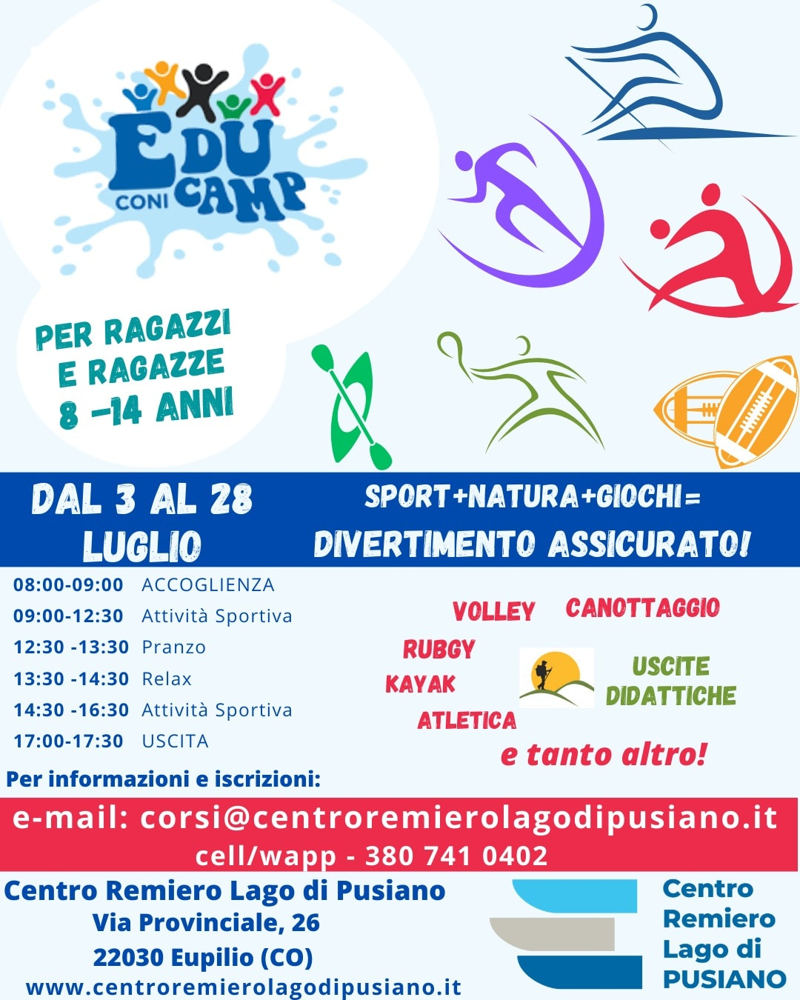

Eventi in programma
- 🌠EDUCAMP Coni al Centro remiero Lago di Pusiano 🌠Dal 3 al 28 luglio prende il via il nostro Camp multidisciplinare. Sport, Natura e tanto divertimento. 🚣🏼🤸🏻‍♀️🤹‍♂️🏈🥳 Per Info 📧 corsi@centroremierolagodipusiano.it ☎️ / Wapp +39 3807410402 Via Provinciale 26 - Eupilio (CO) 
- ☀️🚣🤩 EduCamp - dal Gioco ai Giochi ☀️🚣🤩 Vi aspettiamo dal 3 luglio per trascorrere giornate di sport, natura e divertimento. 🤸🥳🤸🥳 Contattateci per informazioni 📨 corsi@centroremierolagodipusiano.it ☎️ +39 380 741 0402 